Collections of images related to our research.
Stacks Image 1949 
Stacks Image 1951 Stacks Image 1953 Stacks Image 1955 Stacks Image 1957 
Stacks Image 1985 Stacks Image 1959 Stacks Image 1993 Stacks Image 1963 Stacks Image 1991 Stacks Image 1961 
Stacks Image 1987 Stacks Image 1965 
Stacks Image 1989
Gallery-Bird photos
Birds
Some bird photos. See more at 500px-Pedro Jordano.
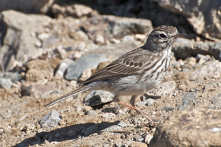
Berthelot’s Pipit Anthus berthelotii Bisbita Caminero
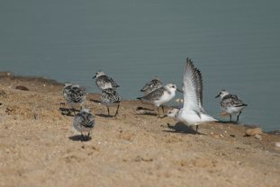
Sanderling Calidris alba Correlimos Tridáctilo
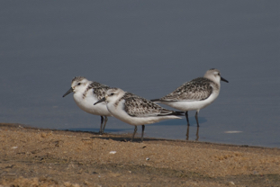
Sanderling Calidris alba Correlimos Tridáctilo
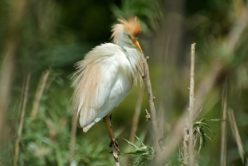
Cattle Egret Bubulcus ibis Garcilla Bueyera
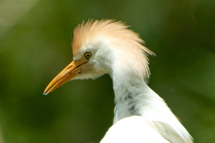
Cattle Egret Bubulcus ibis Garcilla Bueyera
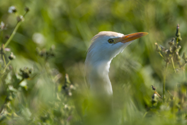
Cattle Egret (ibis) Bubulcus ibis ibis Garcilla Bueyera
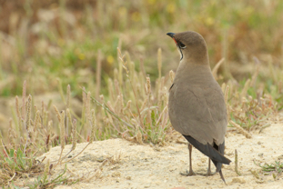
Collared Pratincole Glareola pratincola Canastera Común
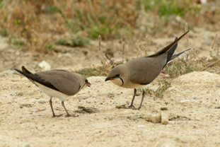
Collared Pratincole Glareola pratincola Canastera Común
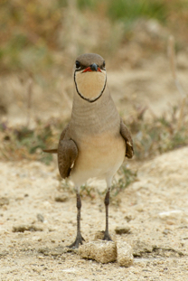
Collared Pratincole Glareola pratincola Canastera Común
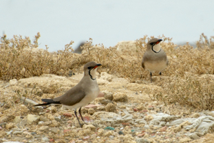
Collared Pratincole Glareola pratincola Canastera Común
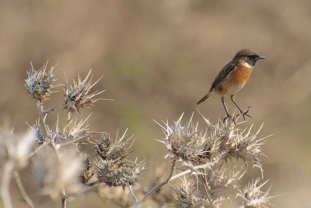
Stonechat (European) Saxicola rubicola Tarabilla común
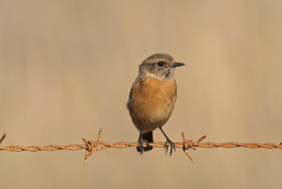
Stonechat (European) Saxicola rubicola Tarabilla común
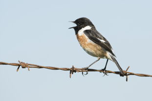
Whinchat Saxicola rubicola Tarabilla común
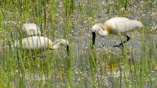
Eurasian Spoonbill Platalea leucorodia Espátula Común
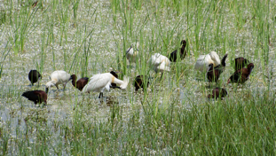
Eurasian Spoonbill Platalea leucorodia Espátula Común
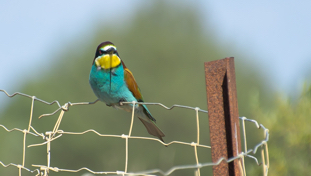
European Bee-eater Merops apiaster Abejaruco Europeo
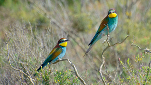
European Bee-eater Merops apiaster Abejaruco Europeo
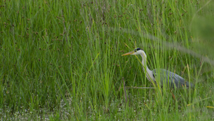
Gray Heron Ardea cinerea Garza Real
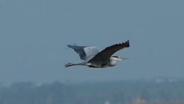
Gray Heron Ardea cinerea Garza Real
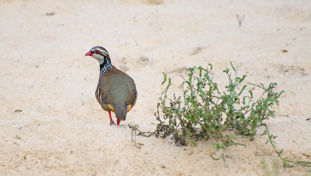
Red-legged Partridge Alectoris rufa Perdiz Roja
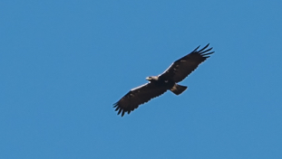
Spanish Eagle Aquila adalberti Águila Imperial Ibérica
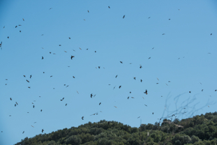
Black Kite (Black) Milvus migrans [migrans Group] Milano negro
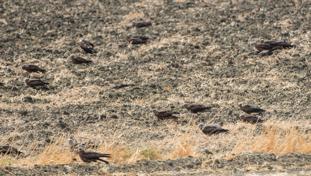
Black Kite (Black) Milvus migrans [migrans Group] Milano negro
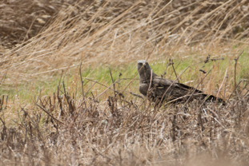
Black Kite (Black) Milvus migrans [migrans Group] Milano negro
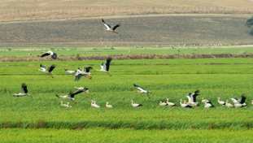
White Stork Ciconia ciconia Cigüeña Blanca
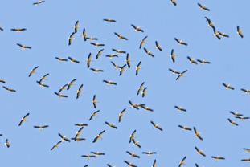
White Stork Ciconia ciconia Cigüeña Blanca
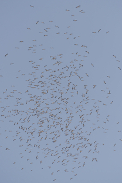
White Stork Ciconia ciconia Cigüeña Blanca
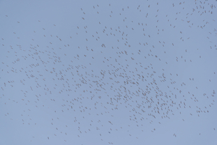
White Stork Ciconia ciconia Cigüeña Blanca
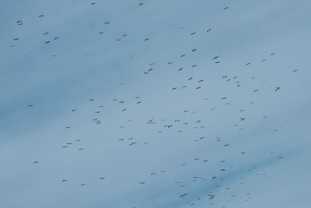
White Stork Ciconia ciconia Cigüeña Blanca
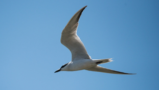
Gull-billed Tern Gelochelidon nilotica Pagaza Piconegra
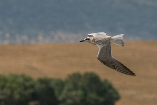
Gull-billed Tern Gelochelidon nilotica Pagaza Piconegra
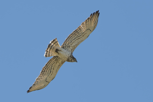
Short-toed Eagle Circaetus gallicus Culebrera Europea
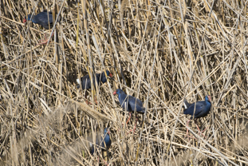
Purple Swamphen Porphyrio porphyrio Calamón Común
Networks
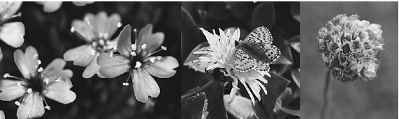
Megafauna fruits
Megafauna fruits
A collection of megafauna fruits and seeds. Herbarium Museu Goeldi, Belém, Pará, Brazil. These photos accompany our study in PLoS One:
Guimarães Jr, P., Galetti, M. and Jordano, P. 2008. Seed dispersal anachronisms: rethinking the fruits extinct megafauna ate. PLOS One, 3(3): e1745.
doi:10.1371/journal.pone.0001745.
The label in the photos is approx. 10 cm wide.
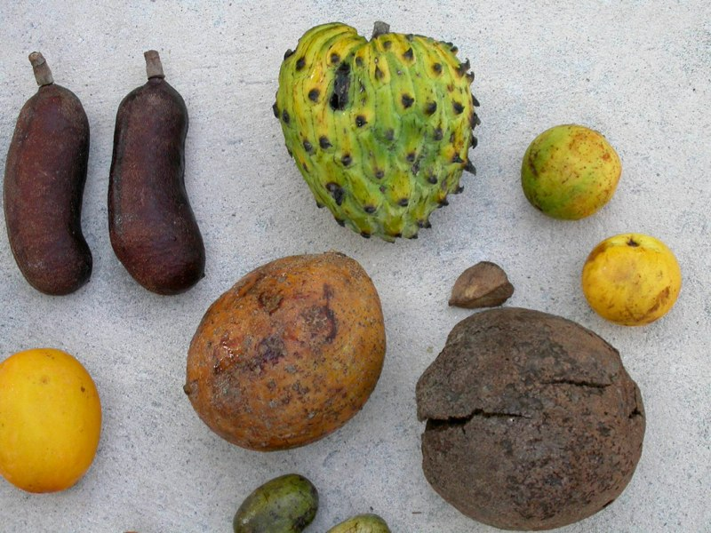
Fruits from Fazenda Rio Negro, Pantanal, Brazil.
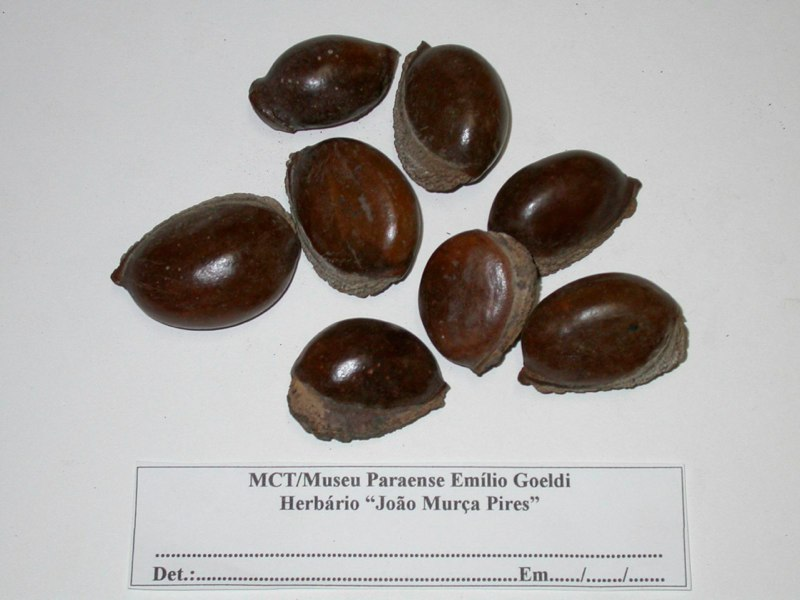
Pouteria macrocarpa. Sapotaceae
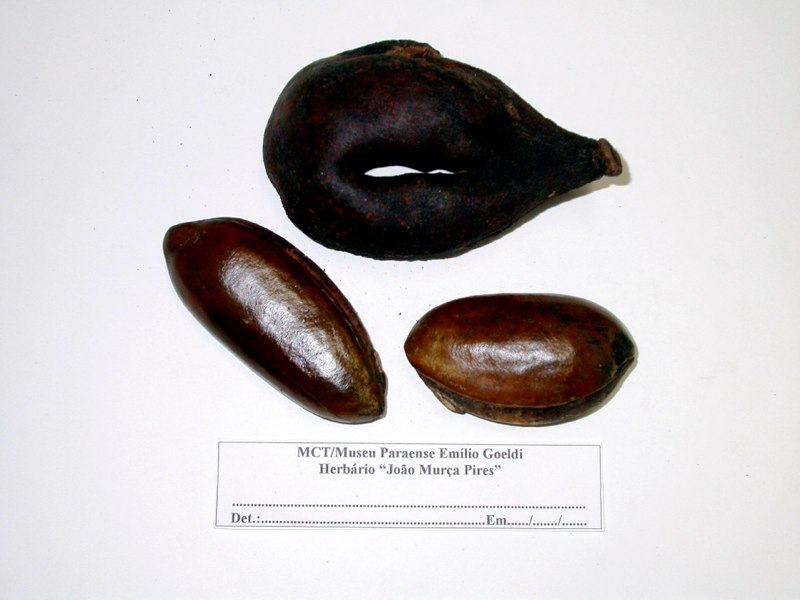
Pouteria ucucui. Sapotaceae
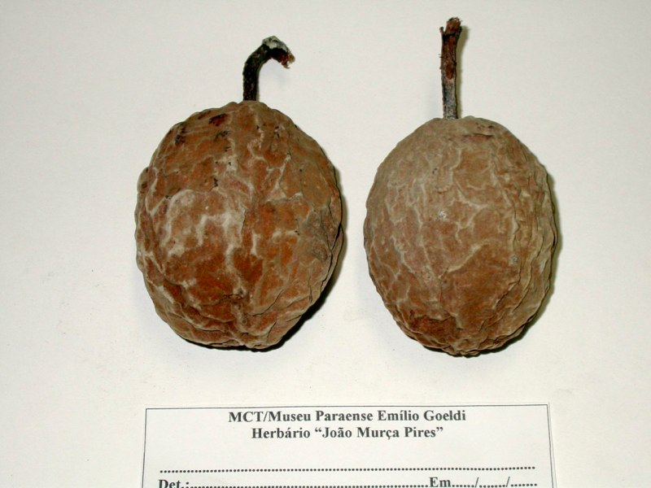
Theobroma speciosa. Malvaceae
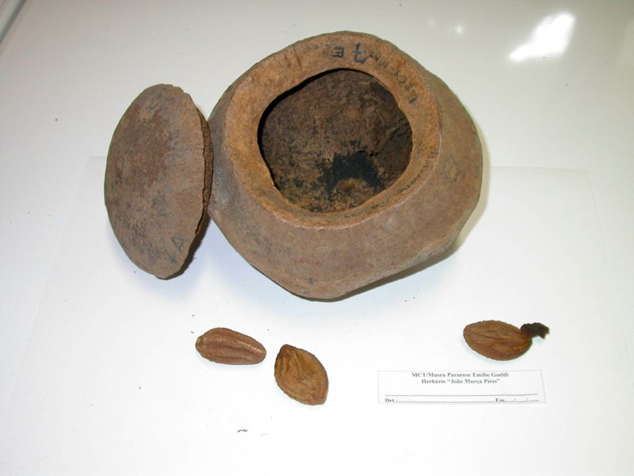
Lecythidaceae
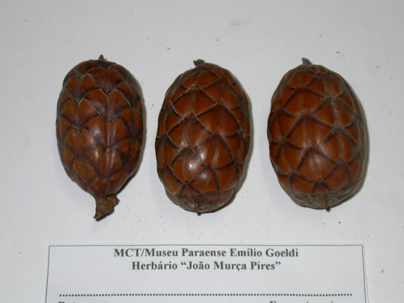
Raphia vinifera. Arecaceae
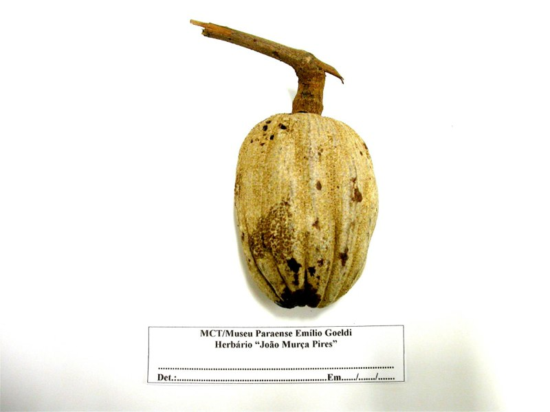
Lacunaria jemmani. Quiinaceae
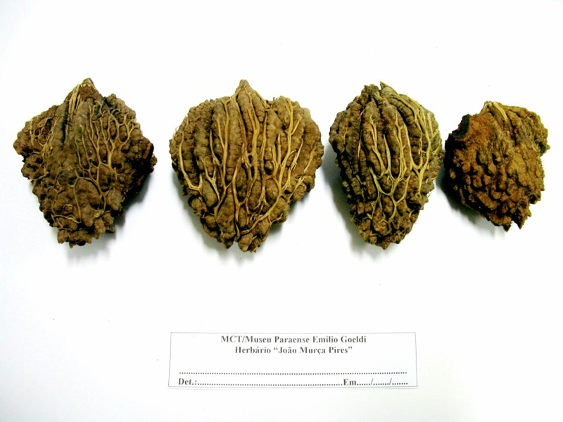
Parinari montana. Chrysobalanaceae
Licania macrophyla. Chrysobalanaceae
Pouteria pariry. Sapotaceae
Theobroma grandiflora. Malvaceae
Theobroma grandiflora. Malvaceae
Scheelea martiana. Arecaceae
Orbignya phalerata. Arecaceae
Phytelephas macrocarpa. Arecaceae
Megafauna fruits from Pantanal (Fazenda Rio Negro), Brazil.
Gallery-Prunus mahaleb
Prunus mahaleb at the study site in Nava de las Correhuelas, Parque Natural de las Sierras de Cazorla, Segura y Las Villas, Jaén, Spain. 1615 m elevation.
Previous Slide Next Slide
Study Sites
Study sites gallery
These are my main study sites. Most of my fieldwork is carried out at Parque Natural de las Sierras de Cazorla, Segura y Las Villas (Jaén), in the eastern area of Andalucia (additional information- in english- here), and Doñana National Park. I also collaborate with José M. Gómez from Grupo de Ecología Terrestre, Univ. Granada, who works chiefly at Parque Nacional de Sierra Nevada and P.N. Sierra de Baza (Granada). Together with Juan Arroyo, I collaborate with projects at Parque Natural de los Alcornocales (Cádiz). More recently, we have started projects in the Canary Islands (PI Alfredo Valido) and north Extremadura (PI Arndt Hampe).
Stacks Image 2106 Stacks Image 2124 Stacks Image 2125 Stacks Image 2131 Stacks Image 2132 Stacks Image 2138 Stacks Image 2139 Stacks Image 2140 Stacks Image 2141 Stacks Image 2142 - Next
- Prev
Doñana
Islas Canarias

Cazorla
Ilha do Cardoso, Brazil
Alcornocales
Brazil
IEG

Art

Fruits, flowers